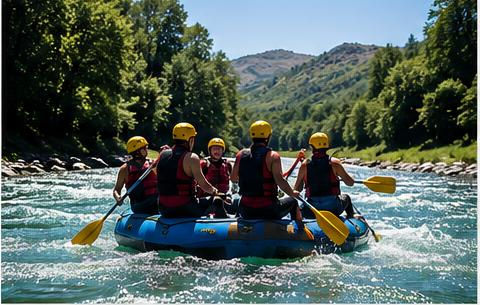

Rafting Família
Ideal para iniciantes e famílias que desejam uma aventura divertida e segura. O percurso possui corredeiras moderadas, acompanhamento de guias experientes e momentos para contemplar a natureza.
Escolha a experiência ideal para viver a emoção das corredeiras com segurança, natureza e diversão.
Reserve sua aventura
Ideal para iniciantes e famílias que desejam uma aventura divertida e segura. O percurso possui corredeiras moderadas, acompanhamento de guias experientes e momentos para contemplar a natureza.

Uma experiência para quem procura mais emoção, combinando trechos tranquilos com corredeiras intensas e exigindo trabalho em equipe durante toda a descida.

Indicada para aventureiros que buscam adrenalina máxima. Inclui corredeiras desafiadoras, instruções técnicas completas e acompanhamento especializado.
| Passeio | Duração | Nível | Indicado para | Valor |
|---|---|---|---|---|
| Rafting Família | 2 horas | Fácil | Famílias e iniciantes | R$ 120 |
| Aventura Intermediária | 3 horas | Moderado | Amigos e grupos | R$ 180 |
| Expedição Radical | 5 horas | Avançado | Aventureiros experientes | R$ 260 |
Entre em contato com nossa equipe para tirar dúvidas, verificar disponibilidade e reservar o passeio ideal.
Fale Conosco